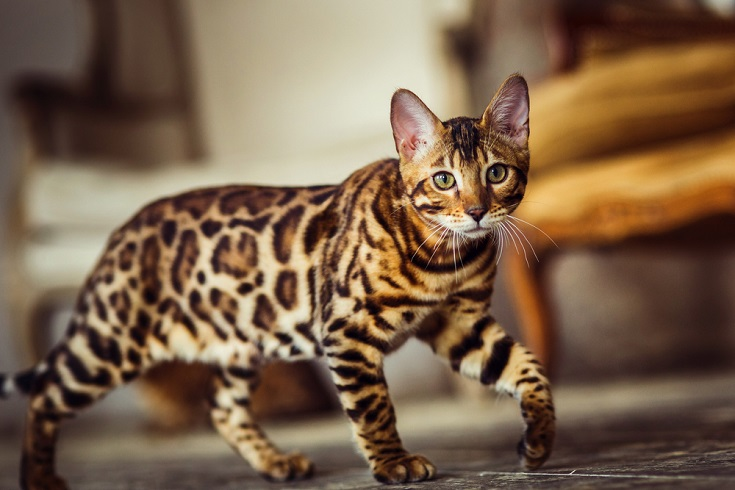

A hybrid breed, created by crossing the Asian Leopard Cat with a domestic cat, such as an Abyssinian, American Shorthair, Burmese or Egyptian Mau.
Japan is the first country to welcome Bengals as family cats in the 1940s.
Bengals are recognized as a breed by The International Cat Association (TICA) - providing the show cats are at least a fourth-generation descendant of the wild Asian Leopard Cat-domestic cat crossing. However, the Cat Fanciers Association does not accept the Bengal as a breed for show competition.
With the "pet leopard" appearance, the Bengal is zooming up the popularity charts, ranking first in TICA, far ahead of runner-up Ragdoll. More than 60,000 Bengals are registered with TICA.
The International Bengal Cat Society and TICA work hard to maintain the Bengal's "wild" look with a "tame" personality.

General Information
Characteristics
Description
COUNTRY OF ORIGIN
United States of America
WEIGHT
8 to 15 pounds
LENGTH
About a foot and a half
FUR
Small (although a long-haired version is available)
EYE COLOR
Green or gold
LONGEVITY
10 to 16 years
Look of Bengals
Sleek, muscular body.
Wild exotic looks, sporting 13 different color coats, including brown tabby and seal lynx point. Coat patterns are spotted or marbled.